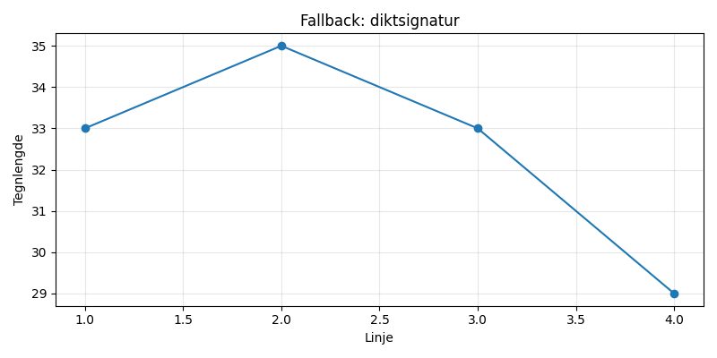

En rusten kjele på en gammel kai, drømmer om suppe og solskinn i mai. Vinden den hvisker, bølgene slår, mens kjelen venter på nye år.

import matplotlib.pyplot as plt
import numpy as np
# Dikt
dikt = """
En rusten kjele på en gammel kai,
drømmer om suppe og solskinn i mai.
Vinden den hvisker, bølgene slår,
mens kjelen venter på nye år.
"""
# Generer data for vindens hastighet og bølgene
vind_hastighet = np.linspace(0.5, 2.5, 50)
bølge_høyde = np.linspace(0.1, 0.8, 50)
# Lag en figur og akser
fig, ax = plt.subplots(figsize=(12, 6))
# Plot vindhastighet som en linje
ax.plot(vind_hastighet, bølge_høyde, color='blue', label='Vindhastighet')
# Legg til tekst fra diktet
ax.text(0.1, 0.9, dikt, fontsize=12, ha='left', color='black')
# Sett tittel og akseetiketter
ax.set_title('En Rusten Kjeles Drømmer', fontsize=16)
ax.set_xlabel('Vindhastighet (m/s)', fontsize=12)
ax.set_ylabel('Bølgehøyde (m)', fontsize=12)
# Legg til en grå bakgrunn
ax.set_facecolor('lightgray')
# Legg til en ramme rundt figuren
for spine in ax.spines:
spine.set_edgecolor('gray')
# Legg til et legende
ax.legend(loc='upper right')
# Juster layout for å unngå overlap
plt.tight_layout()
# Lagre figuren
plt.savefig(output_path)execution_ok=False fallback_used=True image_ok=True